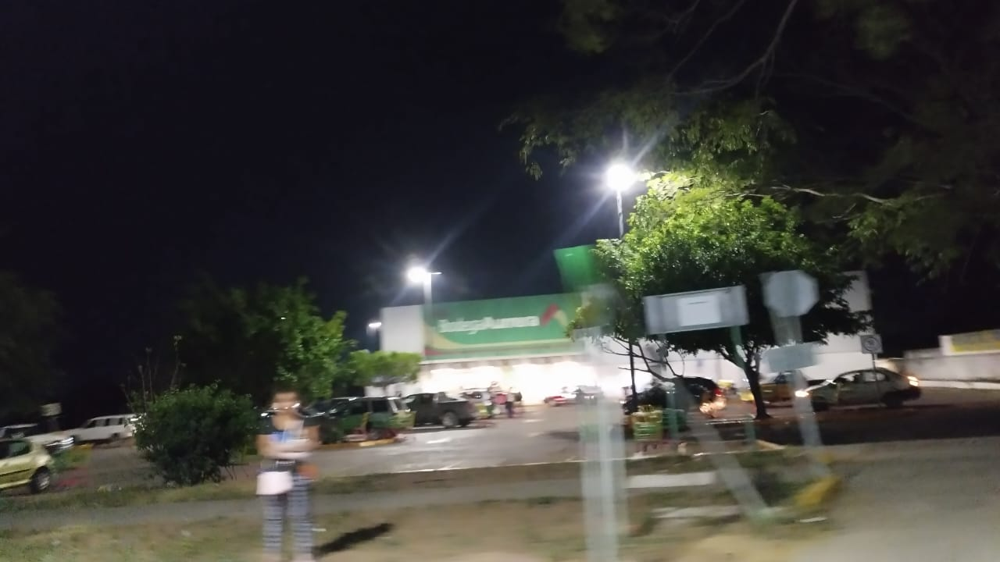
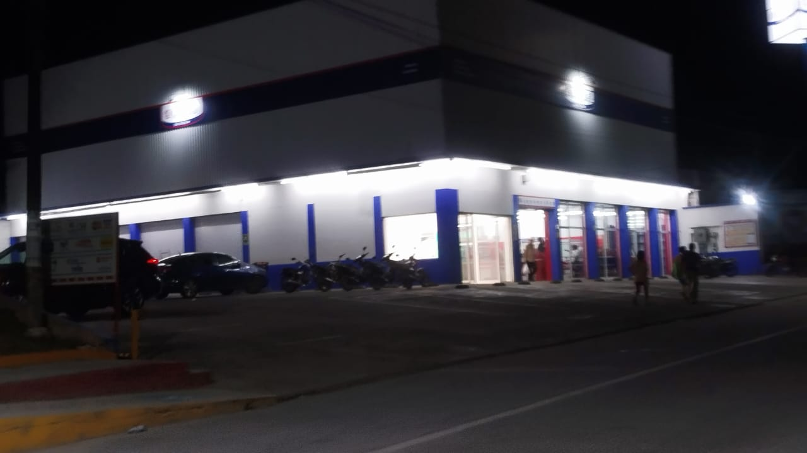
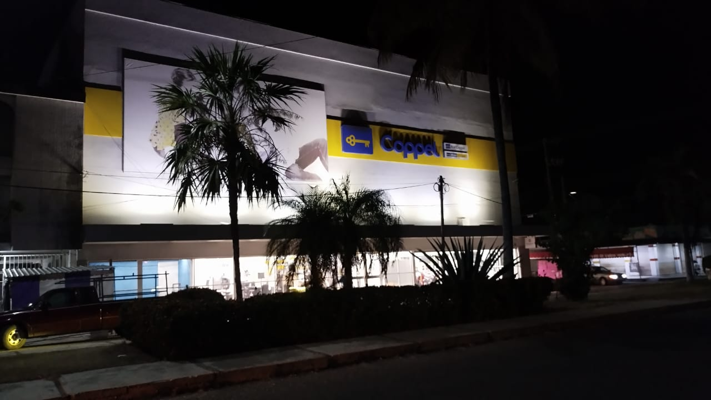
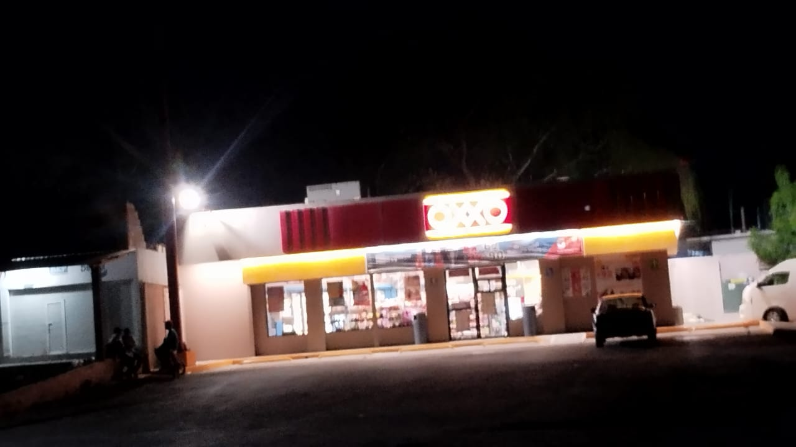
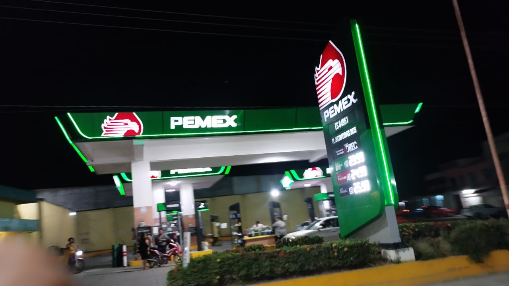

Los factores economicos que impulsan el municpio Tres Valles, Ver.
En esta seccion podras encontrar algunos de los negocios y factores que impulsan la economia de Tres Valles, Ver.

Sucursal Bodega Aurrera
En esta sucursal es donde muchas personas vienen en busca de precios accesibles para satisfacer sus necesidades
este lugar promueve la economia dando empleos y ofreciendo productos gracias a la demanda que hay

Sucursal Lores
Hay diferentes sucursales Lores distribuidas por todo Tres Valles, al igual que Bodega Aurrera, Lores se encarga de dar precios accesibles
al haber mas de 1 sucursal tiene una mayor recaudacion por los consumidores

Sucursal Coppel
Esta sucursal de Coppel ayuda de diferentes formas a la economia principalmente gracias a su area bancaria donde se pueden hacer diferentes transacciones como:
retiros, depositos, solicitar prestamos, etc.
Tambien se pueden realizar compras de diferentes articulos en esta sucursal como:
ropa, muebles, electrodomesticos, motocicletas, celulares, etc.

Sucursal OXXO
Tres Valles cuenta con diferentes sucursales que estan distribuidas en puntos estrategicos de la ciudad y sus alrededores
estos establecimientos son de gran ayuda ya que cuentan con un servicio de 24 hrs.
Contribuye a la economia gracias a sus ventas diarias y a los empleos que produce
ademas de que en estas sucursales tambien se pueden realizar depositos, retiros, pagos de servicios, etc.

Gasolinera PEMEX
Esta es una de las gasolineras que se encuentran en Tres Valles, son de gran ayuda para los ciudadanos con su transporte propio.
Al ser un lugar muy frecuentado con ventas diarias contribuye mucho al municipio y de igual forma genera empleos